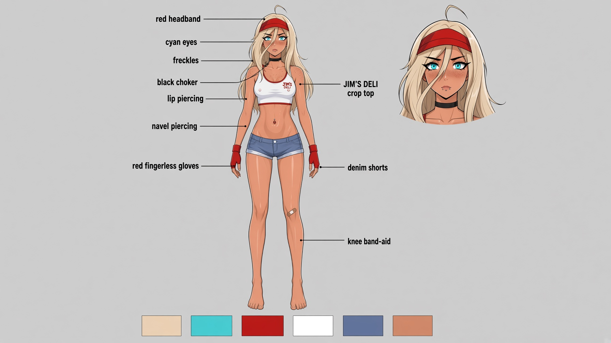
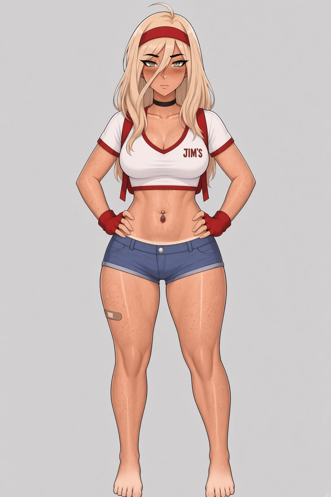
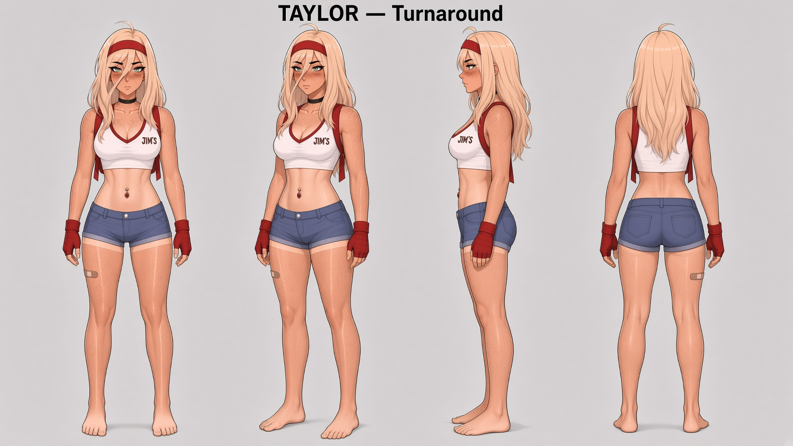
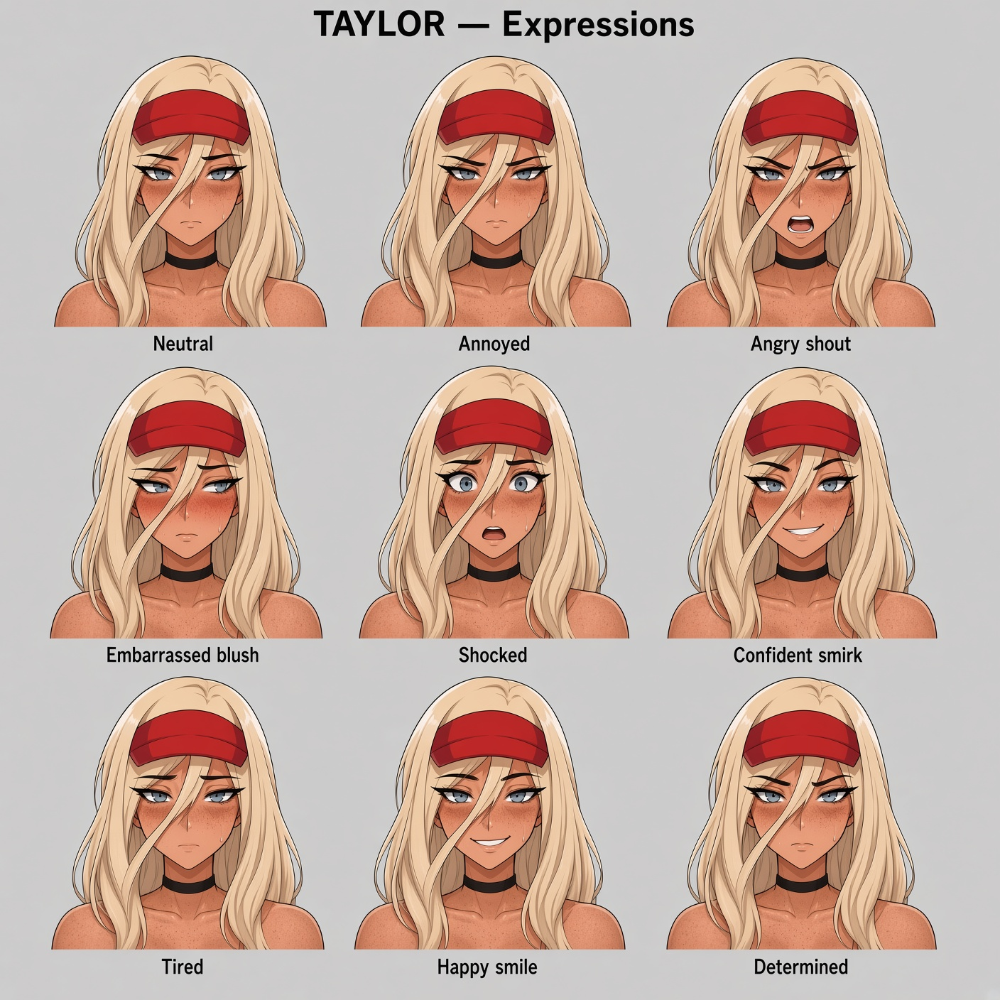
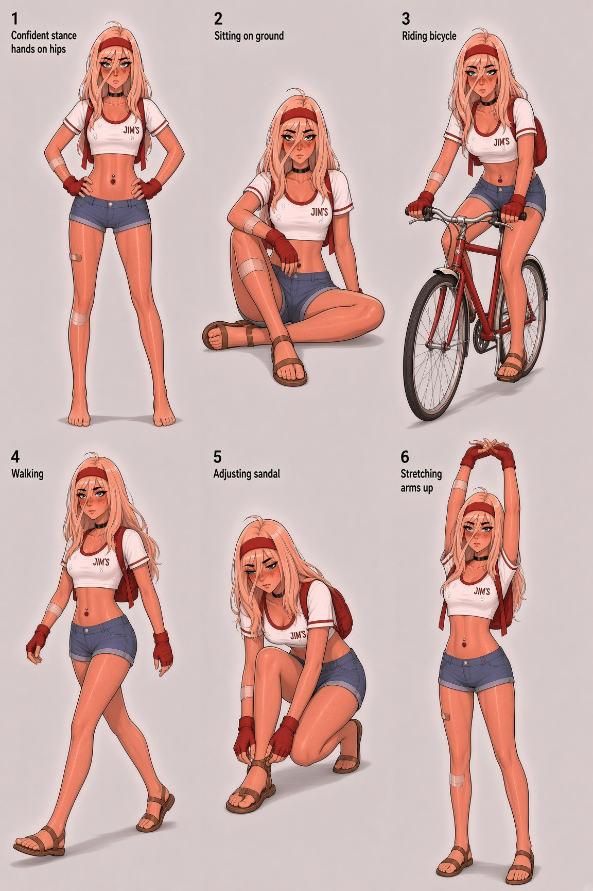

Taylor — Character Sheets
Jim's Delivery · recreated from source comic panels · western adult digital comic style
Natural green eyes · freckles · red headband · black choker · JIM'S crop top · red gloves · blue micro shorts · navel piercing · thigh bandage

Character Design SheetFront view + portrait + palette + detail callouts (navel piercing, glove, logo, waistband)

Base Full-Body FrontClean single-figure reference

Turnaround SheetFront · 3/4 · side profile · back

Facial ExpressionsNeutral, annoyed, angry, embarrassed, shocked, smirk, tired, happy, determined

Poses SheetConfident stand · bike ride · wave · fix chain · delivery walk · rest